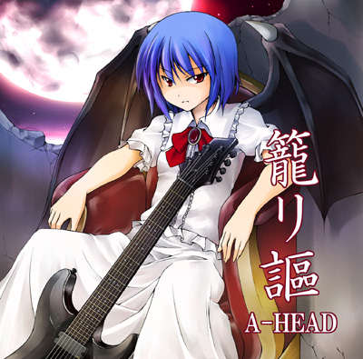

2009/08/15
東地区O-10a 「A-HEAD」
イベント頒布価格 500円
委託情報は決まり次第更新します。
Link Banner
本作の紹介リンクを貼って下さる方は以下のバナーをお使い下さい。

400×80
200×40
「籠リ謳」
|  東方アレンジCD4作目にしてA-HEAD初のプレスCDとなる本作は、 一部の曲に7弦ギター/5弦ベースを使用したHRアレンジです。 また、過去音源の機材を一新し、より重圧な音で再録しました。 A-HEAD東方アレンジ活動1年間の集大成！ |
Track List 1 少女≠王女 亡き王女の為のセプテット 2 衝動 U.N.オーエンは彼女なのか？ 3 夏風に乗って 風神少女 4 現人神の謡声 信仰は儚き人間の為に/少女が見た日本の原風景 5 吹き荒ぶ風、神の威厳 神さびた古戦場 ～ Suwa Foughten Field 6 Unlock ラクトガール ～ 少女密室 7 暁月夜 砕月 8 コモリウタ 不思議の国のアリス/The Grimoire of Alice クロスフェードデモ |
Staff List
| All Music Composer Arrange Guitar Bass Drum Program Key Board Illust Vocal Lyrics |
ZUN あきやまうに 秋時 ★(tr.1) Lu-na(tr.8) SHUN(tr.1) 真朱(tr.8) |
頒布詳細
2009/08/15
東地区O-10a 「A-HEAD」
イベント頒布価格 500円
委託情報は決まり次第更新します。
Link Banner
本作の紹介リンクを貼って下さる方は以下のバナーをお使い下さい。
400×80

200×40